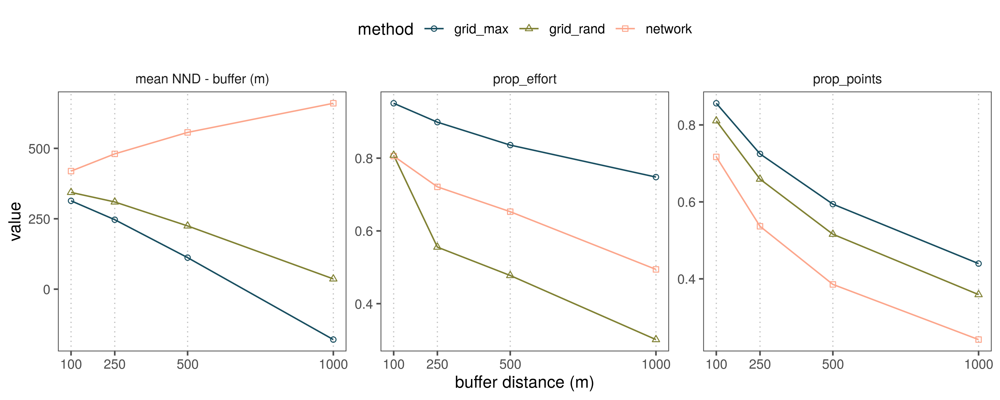

Section 11 Spatial thinning: A comparison of approaches
11.1 Prepare libraries
# load libraries
library(tidyverse)
library(glue)
library(readr)
library(sf)
# plotting
library(ggthemes)
library(scico)
library(scales)
# ci func
ci <- function(x){qnorm(0.975)*sd(x, na.rm = T)/sqrt(length(x))}
# load python libs here
library(reticulate)
# set python path
use_python("/usr/bin/python3")11.2 Traditional grid-based thinning
# load the shapefile of the study area
wg <- st_read("data/spatial/hillsShapefile/Nil_Ana_Pal.shp") %>%
st_transform(32643)
# get scales
# load checklist data and select one per rounded 500m coordinates
{
data <- read_csv("data/eBirdChecklistVars.csv") %>%
count(longitude, latitude, name = "tot_effort")
# how many unique points
n_all_points <- nrow(data)
d_all_effort <- sum(data$tot_effort)
# round to different scales
scale <- c(100, 250, 500, 1000)
# group data by scale
data <- crossing(scale, data) %>%
group_by(scale) %>%
nest() %>%
ungroup()
}
# select one point per grid cell
data <- mutate(data, data = map2(scale, data, function(sc, df){
# transform the data
df <- df %>%
st_as_sf(coords = c("longitude", "latitude")) %>%
`st_crs<-`(4326) %>%
st_transform(32643) %>%
bind_cols(as_tibble(st_coordinates(.))) %>%
mutate(coordId = 1:nrow(.),
X_round = plyr::round_any(X, sc),
Y_round = plyr::round_any(Y, sc))
# make a grid
grid <- st_make_grid(wg, cellsize = sc)
# which cell contains which points
grid_contents <- st_contains(grid, df) %>%
as_tibble() %>%
rename(cell = row.id, coordId = col.id)
rm(grid)
# what's the max point in each grid
points_max <- left_join(df %>% st_drop_geometry(),
grid_contents, by = "coordId") %>%
group_by(cell) %>%
filter(tot_effort == max(tot_effort))
# get summary for max
max_sites <- points_max %>%
ungroup() %>%
summarise(prop_points= length(coordId)/n_all_points,
prop_effort = sum(tot_effort)/d_all_effort) %>%
pivot_longer(cols = everything(),
names_to = "variable")
# select a random point in each grid
points_rand <- left_join(df %>% st_drop_geometry(),
grid_contents, by = "coordId") %>%
group_by(cell) %>%
sample_n(size = 1)
# get summary for rand
rand_sites <- points_rand %>%
ungroup() %>%
summarise(prop_points = length(coordId)/n_all_points,
prop_effort = sum(tot_effort)/d_all_effort) %>%
pivot_longer(cols = everything(),
names_to = "variable")
df <- tibble(grid_rand = list(rand_sites), grid_max = list(max_sites),
points_rand = list(points_rand), points_max = list(points_max))
}))
# unnest data
data <- unnest(data, cols = data)
# save summary as another object
data_thin_trad <- data %>%
select(-contains("points")) %>%
pivot_longer(cols = -contains("scale"),
names_to = "method", values_to = "somedata") %>%
unnest(cols = somedata)
# save points for later comparison
points_thin_trad <- data %>%
select(contains("points"), scale)
rm(data)11.3 Network-based thinning
Load python libraries.
11.4 Finding modularity in proximity networks
# read in checklist covariates for conversion to gpd
# get unique coordinates, assign them to the df
# convert df to geo-df
chkCovars = pd.read_csv("data/eBirdChecklistVars.csv")
ul = chkCovars[['longitude', 'latitude']].drop_duplicates(subset=['longitude', 'latitude'])
ul['coordId'] = np.arange(0, ul.shape[0])
# get effort at each coordinate
effort = chkCovars.groupby(['longitude', 'latitude']).size().to_frame('tot_effort')
effort = effort.reset_index()
# merge effort on ul
ul = pd.merge(ul, effort, on=['longitude', 'latitude'])
# make gpd and drop col from ul
ulgpd = gpd.GeoDataFrame(ul, geometry=gpd.points_from_xy(ul.longitude, ul.latitude))
ulgpd.crs = {'init' :'epsg:4326'}
# reproject spatials to 43n epsg 32643
ulgpd = ulgpd.to_crs({'init': 'epsg:32643'})
ul = pd.DataFrame(ul.drop(columns="geometry"))
# function to use ckdtrees for nearest point finding
def ckd_pairs(gdfA, dist_indep):
A = np.concatenate([np.array(geom.coords) for geom in gdfA.geometry.to_list()])
ckd_tree = cKDTree(A)
dist = ckd_tree.query_pairs(r=dist_indep, output_type='ndarray')
return dist
# define scales in metres
scales = [100, 250, 500, 1000]
# function to process ckd_pairs
def make_modules(scale):
site_pairs = ckd_pairs(gdfA=ulgpd, dist_indep=scale)
site_pairs = pd.DataFrame(data=site_pairs, columns=['p1', 'p2'])
site_pairs['scale'] = scale
# get site ids
site_id = np.concatenate((site_pairs.p1.unique(), site_pairs.p2.unique()))
site_id = np.unique(site_id)
# make network
network = nx.from_pandas_edgelist(site_pairs, 'p1', 'p2')
# get modules
modules = list(nx.algorithms.community.greedy_modularity_communities(network))
# get modules as df
m = []
for i in np.arange(len(modules)):
module_number = [i] * len(modules[i])
module_coords = list(modules[i])
m = m + list(zip(module_number, module_coords))
# add location and summed sampling duration
unique_locs = ul[ul.coordId.isin(site_id)]
module_data = pd.DataFrame(m, columns=['module', 'coordId'])
module_data = pd.merge(module_data, unique_locs, on='coordId')
# add scale
module_data['scale'] = scale
return [site_pairs, module_data]
# run make modules on ulgpd at scales
data = list(map(make_modules, scales))
# extract data for output
tot_pair_data = []
tot_module_data = []
for i in np.arange(len(data)):
tot_pair_data.append(data[i][0])
tot_module_data.append(data[i][1])
tot_pair_data = pd.concat(tot_pair_data, ignore_index=True)
tot_module_data = pd.concat(tot_module_data, ignore_index=True)
# make dict of positions and array of coordinates
# site_id = np.concatenate((site_pairs.p1.unique(), site_pairs.p2.unique()))
# site_id = np.unique(site_id)
# locations_df = ul[ul.coordId.isin(site_id)][['longitude', 'latitude']].to_numpy()
# pos_dict = dict(zip(site_id, locations_df))
# output data
tot_module_data.to_csv(path_or_buf="data/site_modules.csv", index=False)
tot_pair_data.to_csv(path_or_buf="data/site_pairs.csv", index=False)
# ends here11.5 Process proximity networks in R
# read in pair and module data
pairs <- read_csv("data/site_pairs.csv")
mods <- read_csv("data/site_modules.csv")
# count pairs at each scale
count(pairs, scale)
pairs %>%
group_by(scale) %>%
summarise(non_indep_pairs = length(unique(c(p1, p2)))/n_all_points)
count(mods, scale)
# nest by scale and add module data
data <- nest(pairs, data = c(p1, p2))
modules <- group_by(mods, scale) %>%
nest() %>% ungroup()
# add module data
data <- mutate(data,
modules = modules$data,
data = map2(data, modules, function(df, m){
df <- left_join(df, m, by = c("p1" = "coordId"))
df <- left_join(df, m, by = c("p2" = "coordId"))
df <- filter(df, module.x == module.y)
return(df)
})) %>%
select(-modules)
# split by module
data$data <- map(data$data, function(df){
df <- group_by(df, module.x, module.y) %>%
nest() %>%
ungroup()
return(df)
})11.6 A function that removes sites
# a function to remove sites
remove_which_sites <- function(pair_data){
{
a = pair_data %>%
select(p1, p2)
nodes_a_init = unique(c(a$p1, a$p2))
i_n_d = filter(mods, coordId %in% nodes_a_init) %>%
select(node = coordId, tot_effort) %>%
mutate(s_f_r = NA)
nodes_keep = c()
nodes_removed = c()
}
while(nrow(a) > 0){
# how many nodes in a
nodes_a = unique(c(a$p1, a$p2))
# get node or site efforts and arrange in ascending order
b = i_n_d %>% filter(node %in% nodes_a)
for (i in 1:nrow(b)){
# which node to remove
node_out = b$node[i]
# how much tot_effort lost
d_n_o = b$tot_effort[i]
# how many rows remain in a if node_out is removed?
a_n_o = filter(a, p1 != node_out, p2 != node_out)
indep_nodes = setdiff(nodes_a, unique(c(a_n_o$p1, a_n_o$p2, node_out)))
# how much sampling effort made spatially independent
indep_sampling = filter(b, node %in% indep_nodes) %>%
summarise(tot_effort = sum(tot_effort)) %>%
.$tot_effort
# message(glue::glue('{node_out} removal frees {indep_sampling} m'))
# sampling freed by sampling lost
b$s_f_r[i] = indep_sampling/d_n_o
}
# arrange node data by decreasing sfr and increasing tot_effort
# highest tot_effort nodes are processed last
b = arrange(b, -s_f_r, tot_effort)
nodes_removed = c(nodes_removed, b$node[1])
# remove pairs of nodes containing the highest sfr node in b
a = filter(a, p1 != b$node[1], p2 != b$node[1])
nodes_keep = c(nodes_keep, setdiff(nodes_a, unique(c(a$p1, a$p2, nodes_removed))))
}
message(glue::glue('keeping {length(nodes_keep)} of {length(nodes_a_init)}'))
# node_status <- tibble(nodes = c(nodes_keep, nodes_removed),
# status = c(rep(TRUE, length(nodes_keep)),
# rep(FALSE, length(nodes_removed))))
return(as.integer(nodes_removed))
}11.7 Removing non-independent sites
# remove 5km and 2.5km scale
data <- data %>% filter(scale <=1000)
# run select sites on the various modules
sites_removed <- map(data$data, function(df){
remove_sites <- unlist(purrr::map(df$data, remove_which_sites))
})
# save as rdata
save(sites_removed, file = "data/data_network_sites_removed.rdata")# get python sites
ul = py$ul
load("data/data_network_sites_removed.rdata")
# subset sites
data <- mutate(data,
data = map(sites_removed, function(site_id){
as_tibble(filter(ul, !coordId %in% site_id))
}))
# which points are kept
points_thin_net <- mutate(data,
data = map(data,function(df){
df <- df %>%
select("longitude", "latitude") %>%
st_as_sf(coords = c("longitude", "latitude")) %>%
`st_crs<-`(4326) %>%
st_transform(32643) %>%
bind_cols(as_tibble(st_coordinates(.))) %>%
st_drop_geometry()
}))
# get metrics for method
data_thin_net <- unnest(data, cols = "data") %>%
group_by(scale) %>%
summarise(prop_points = length(coordId)/n_all_points,
prop_effort = sum(tot_effort)/d_all_effort) %>%
mutate(method = "network") %>%
pivot_longer(cols = -one_of(c("method", "scale")),
names_to = "variable")11.8 Measuring method fallibility
How many points, at different spatial scales, remain after the application of each method?
11.9 Prepare data for Python
# get points by each method
points_list <- append(points_thin_net$data, values = append(points_thin_trad$points_rand,
points_thin_trad$points_max))
# get scales as list
scales_list <- list(100,250,500,1000, rep(c(100,250, 500,1000), 2)) %>% flatten()
# send to python
py$points_list = points_list
py$scales_list = scales_list11.10 Count props under threshold in Python
# transform each element to gpd
# a function to convert to gpd
def make_gpd(df):
df = gpd.GeoDataFrame(df, geometry=gpd.points_from_xy(df.X, df.Y))
df.crs = {'init' :'epsg:32643'}
return df
# function for mean nnd
# function to use ckdtrees for nearest point finding
def ckd_test(gdfA, gdfB, dist_indep):
A = np.concatenate([np.array(geom.coords) for geom in gdfA.geometry.to_list()])
#simplified_features = simplify_roads(gdfB)
B = np.concatenate([np.array(geom.coords) for geom in gdfB.geometry.to_list()])
#B = np.concatenate(B)
ckd_tree = cKDTree(B)
dist, idx = ckd_tree.query(A, k=[2])
dist_diff = list(map(lambda x: x - dist_indep, dist))
mean_dist_diff = np.asarray(dist_diff).mean()
return mean_dist_diff
# apply to all data
points_list = list(map(make_gpd, points_list))
# get nnb all data
mean_dist_diff = list(map(ckd_test, points_list, points_list, scales_list))
# count points above threshold
# n_non_indep = []
# for i in np.arange(len(points_list)):
# ni_pairs = ckd_test(gdfA=points_list[i],gdfB=points_list[i], dist_indep=scales_list[i])
# ni_pairs = pd.DataFrame(data=ni_pairs, columns=['p1', 'p2'])
# site_id = np.concatenate((ni_pairs.p1.unique(), ni_pairs.p2.unique()))
# ni_sites = len(np.unique(site_id))/points_list[i].shape[0]
# n_non_indep.append(ni_sites)11.11 Plot metrics for different methods
# combine the thinning metrics data
data_plot <- bind_rows(data_thin_net, data_thin_trad)
# get data for mean distance
data_thin_compare <- tibble(scale = unlist(scales_list),
method = c(rep("network", 4),
rep("grid_rand", 4),
rep("grid_max", 4)),
`mean NND - buffer (m)` = unlist(py$mean_dist_diff)) %>%
pivot_longer(cols = "mean NND - buffer (m)",
names_to = "variable")
# bind rows with other data
data_plot <- bind_rows(data_plot, data_thin_compare)
# plot results
fig_spatial_thinning <-
ggplot(data_plot)+
geom_vline(xintercept = scale, lty = 3, colour="grey", lwd=0.4)+
geom_line(aes(x = scale, y= value, col =method))+
geom_point(aes(x = scale, y= value, col =method, shape = method))+
facet_wrap(~variable, scales = "free")+
scale_shape_manual(values = c(1, 2, 0))+
scale_x_continuous(breaks = scale)+
scale_y_continuous()+
scale_colour_scico_d(palette = "batlow", begin=0.2, end=0.8)+
theme_few()+
theme(legend.position = "top")+
labs(x= "buffer distance (m)")
# save
ggsave(fig_spatial_thinning,
filename = "figs/fig_spatial_thinning_02.png", width = 10, height = 4,
dpi=300); dev.off()